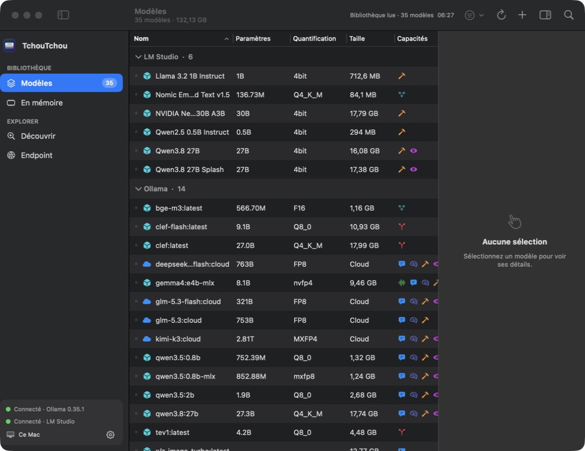

TchouTchou 🚂
A local LLM switchyard for macOS. See every model on your Mac, and send each request to the right engine through one OpenAI-compatible endpoint.

Library
Ollama and LM Studio models in one table: size, quantization, capabilities. Click to copy an id.
In memory
What is loaded right now, RAM use, activity and prompt progress when the engine exposes it.
Discover
Search Ollama, Hugging Face and LM Studio catalogs. Filter by capability, sort by popularity or newest.
Endpoint
One address, 127.0.0.1:41235/v1. Routes by model to Ollama, LM Studio, MLX and free OpenRouter models.
Use it
make test make install open /Applications/TchouTchou.app curl http://127.0.0.1:41235/v1/models
Requires macOS 14+ and at least one of Ollama, LM Studio or an MLX server. The endpoint listens on loopback only.